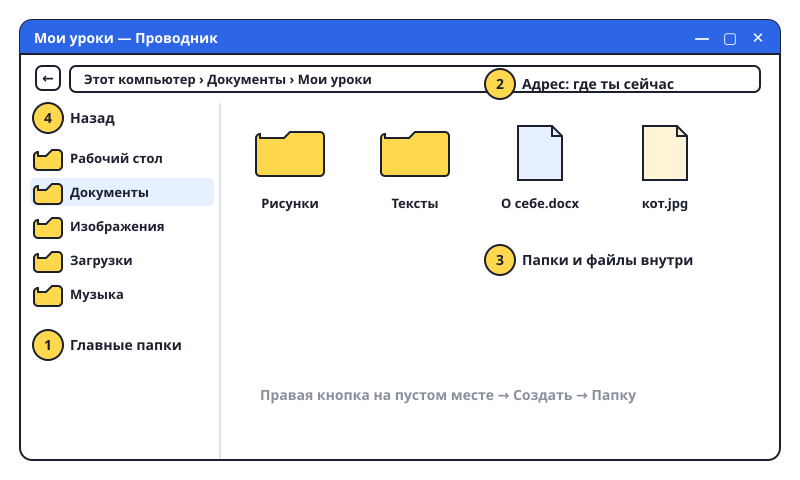

Файлы и папки
Всё, что есть в компьютере — рисунки, тексты, музыка, — это файлы. Папки нужны, чтобы файлы не валялись в куче.

Что такое что
- Файл — одна штука: один рисунок, один текст, одна песня. У файла есть имя и «фамилия» после точки — расширение.
кот.jpg— картинка,сочинение.docx— текст Word,песня.mp3— музыка. - Папка — коробка для файлов. В папке могут лежать другие папки. Значок папки — жёлтый 📁.
- Проводник — программа, чтобы ходить по папкам. Её значок — жёлтая папочка на панели задач. Или нажми Win+E.
Шаги
- Открой Проводник. Слева — список главных папок: Рабочий стол, Документы, Изображения, Загрузки.
- Зайди в «Документы» двойным кликом.
- Создай свою папку: правая кнопка на пустом месте → «Создать» → «Папку». Появится «Новая папка» с синим именем — сразу напиши своё имя, например Мои уроки, и нажми Enter.
- Переименовать: кликни на папку один раз, нажми F2, напиши новое имя, Enter.
- Вернуться назад: стрелка ← в левом верхнем углу Проводника. Вверху видна «дорожка»: Этот компьютер › Документы › Мои уроки. Это адрес папки, по нему видно, где ты.
Попробуй сам: в «Документах» создай папку «Мои уроки». Внутри неё создай ещё две: «Рисунки» и «Тексты».
Давай файлам понятные имена. «Сочинение про лето» найти легко, а «ааа111» — нет.